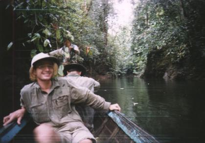
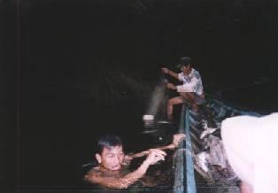
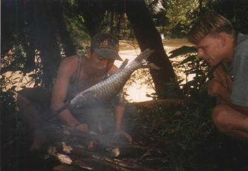

Nadat we rond 5:30 uur opstonden, gingen we meteen aan het werk om de tent af te breken. Het kiezelstrand was veel kleiner dan gisteren. We hoorden dat het water 's nachts nog veel hoger was geweest: het water was tot onder onze hangcontructie gekomen. Als het 's nachts hard regent, dan stijgt het water vaak onmiddellijk, afhankelijk van de plaats waar het geregend heeft. 's Morgens is dan vaak het meeste water al weer afgevoerd. Ebok, Jelayan en hun vriend hadden deze nacht het aapje opgegeten en een aantal grote stukken vlees van het wilde zwijn licht geroosterd. Ze hadden de hele nacht niet geslapen, want door het hoge water werden ze de steile oever opgejaagd.
|  |
Nog verder het primaire oerwoud in! |
Zodra wij weer 100% paraat waren, vertrokken we meteen verder de jungle in. Voor het vertrek vroeg Jelayan aan mij of we een deel van het wilde zwijn wilden hebben. Dat wilden we natuurlijk wel! Als je de hele week vrijwel alleen op rijst moet overleven, dan is wat vers vlees altijd van harte welkom. We overlegden en hadden wel interesse in de ribbenkast van het beest; tenslotte zijn we thuis gewend om spare-ribs te eten! Jelayan en Ebok overlegden heel even en toen kregen we toch iets anders: hij pakte zijn parang en sneed drie grote lappen van één van de achterpoten af. Ik kreeg het zo in de hand. Raar idee dat dit vlees gisteravond nog in de jungle rondliep. Bij elkaar kregen we zo'n 2 kg vlees. Gelukkig had ik nog wat plastic zakken paraat, want met alle insecten in de jungle zou het vlees binnen no-time al voor je worden opgegeten. Ik hing de plastic zak aan mijn rugtas en we vertrokken. De derde Indonesiër bleef trouwens achter; hij zou deze dag het wilde zwijn verder demonteren en nog wat gaan jagen.
|  |
Als echte vakmannen vingen Ebok en Jeyalan vis. |
Na ongeveer drie kwartier varen, kwamen we bij een heel mooie zijrivier. De zijrivier kwam uit op de rivier waarover wij voeren. De stroming was vrij licht en het water daardoor zeer helder (geen gruis). Nu liet Ebok zijn kunstjes zien. Als een echte vakman zette hij drie netten op over de gehele breedte van de zijrivier. Elk net lag zo'n 20 meter stroomopwaarts ten opzichte van de vorige. Het was nog geen 6:00 uur en bovendien nog een beetje fris, maar Ebok sprong zonder enige twijfel de rivier in om de vissen letterlijk door de netten te jagen. Hij maakte hierbij geluiden en agressieve bewegingen. Ook porde hij met een tak op bepaalde plekken in de rivierbodem. Bij het inhalen van het eerste net zaten bijna 10 grote vissen. De mazen van het net waren groot, zodat alleen grote vissen gevangen konden worden. De vissen waren rond de 40 cm lang en de meesten werden met een stuk hout doodgeknuppeld, omdat ze anders de boot uit zouden kunnen springen.
We voeren nog een aantal uren verder totdat het varen steeds moeilijker
werd. We lieten ons op een geschikte plek afzetten. Volgens Richard's
horloge waren we zo'n 500 meter boven het zeeniveau. Ebok vroeg aan
mij of we nog een vis wilden hebben. Ik knikte waarna Ebok mij zo'n
glibberig ding aangaf. Hij was dood, maar het slijm kwam tussen de
schubben door naar buiten, zodat ik hem goed moest vasthouden. Ik
leerde het beest bij de kieuwen vast te pakken voor meer grip. Steven
en Ebok waren al enkele meters omhoog geklommen waar een klein vlak
gedeelte was voor ons kamp. De oever was zo steil, dat ik met die vis
nauwelijks naar boven kon. Steven vond het heel leuk toen ik hem
vroeg of hij die glibberige vis even aan wilde pakken. Not!!!
|  |
Hier werden we gedropt in de jungle. Deze plek zou ons kamp worden voor de komende dagen. We roosterden hier een vis die Ebok (links) ons gegeven had. |
We verbeterden het vuur, en aten uiteindelijk de vis (sema) op. Toen zijn we aan de tent gaan werken, want die moet te allen tijde voor het donker opgezet zijn. Het bleek verreweg de moeilijkste keer tot nu toe, want er was maar weinig hout dat we gemakkelijk konden wegzagen. Alle bomen, boompjes en lianen waren in elkaar verstrengeld, zodat ik voor het omzagen van een boompje meer dan 10 andere takken of lianen moest doorhakken c.q. zagen. De parang van Steven was hier bijna onmisbaar. Tijdens het hout zoeken sprong er een enorm groot insekt op mijn hand. Ik voelde zijn poten op mijn huid klemmen. Het was een soort sprinkhaan van zo'n 10 à 15 cm groot. Ik schrok me werkelijk 't apelazarus en viel van de omgevallen boomstam waarop ik stond!
Het duurde al met al zo'n 2,5 uur voordat de tent hing. Daarna moesten we vrijwel meteen aan het vuur beginnen. De theorie uit de Nederlandse survival-boekjes lijkt allemaal zo simpel, maar ook het vuur stabiel aan krijgen duurde ruim 2 uur! Werkelijk niets brand goed wanneer het nog niet heet is. Zelfs lucifers branden niet meer nadat ze even in de open (vochtige) lucht gelegen hebben. Drie maal hebben we een flinke scheut benzine gebruikt, maar zelfs dat hielp niet om een vuurtje aan te houden. We stonden op het punt om dan maar de benzinebrander te gebruiken. Deze hadden we eigenlijk alleen voor nood mee. Ik kon het niet uitstaan en begon het allerdroogste en dode hout dat we konden vinden te splijten. Vervolgens maakte ik zeer fijn schaafsel. Het vergde allemaal erg veel geduld, maar uiteindelijk wist ik met behulp van schaafsel, lucifers, een waxinelichtje, een aansteker en vele kleine dode takjes een vuurtje aan te krijgen. Al snel werd het een klus voor twee personen om het vuur aan te houden. Steven wapperde met mijn pet boven het vuur om zo veel mogelijk verse zuurstof bij het vuur te krijgen. Toen het vuur stabiel was, was het inmiddels donker. Het was een echt overwinningsgevoel dat we zoiets simpels als een vuurtje hadden.
Richard had in de tussentijd het vlees van het wilde zwijn dat we gekregen hadden, keurig in stukjes gesneden. Met ketjap, sambal en rijst konden we die kleine twee kilo vlees gemakkelijk op. De planning was namelijk om het vlees 's middags op te eten. In het donker hoorden we talloze geluiden van krekels, andere insecten en vooral apen. Overdag hadden we al veel grote vlinders gezien, maar nu wemelde het van de vuurvliegjes. Zodra we klaar waren met eten, begon het hard te regenen. Snel alle spullen opruimen en orde scheppen! Het vuur was net onder de luifel zodat we nog thee en koffie konden nemen. Het zeil van de tent bleek toch niet helemaal goed gespannen te zijn (het uiterlijk van de tent wordt immers bepaald door de positie van de omliggende bomen). Op het tentzeil verzamelde zich een plas water. Met bijna geen kleren en met mijn slippers aan repareerde ik met Steven de tent op een professorische wijze met houtjes, touw en stenen. Tijdens de thee en koffie had ik mijn slippers aan gelaten. Ik werd twee keer gebeten door een grote mier. Die pijn is heel intens, maar duurt gelukkig kort. De mieren bleken zelfs dwars door onze broeken te kunnen bijten. Zodra je je verplaatste en daardoor een mier beknelde, nam het beest wraak door te bijten. 's Nachts regende het weer hevig en Steven's deel van de tent werd nat. Vanaf 1:00 uur heeft hij niet meer kunnen slapen.
Naar de volgende dag | Index